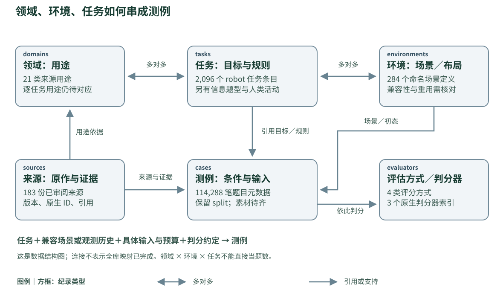
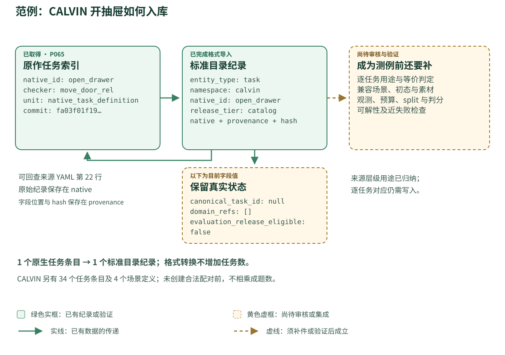

Pipeline 规格 0.1 · 2026-10-08。用途分类沿用 domains-0.11；本文件没有添加领域、修改既有规模实数或恢复旧配额。
三分钟了解整体
创建一条可重跑、可追溯的数据生产线：找来源 → 固定版本 → 截取原作纪录 → 统一字段 → 对齐领域、环境与任务 → 验证素材与判分 → 发布目录及可评测子集。每一步都留下输入、输出、失败原因与版本。
对外维持五项：领域、环境、任务、题数、评估方式。背后加上来源、文件与关系纪录，支持追溯及去重。来源层级的用途分类，与逐任务的用途对应，分开验收。
统一的核心是身份、字段语义、关系和验证规则。 视频可保留视频格式，robot episodes 可保留 RLDS／LeRobot，相同界面透过 adapter 读取。机器人的动作空间、传感、物理与判分条件仍必须明确描述。
图例：绿色实框表示本次已有的纪录或验证，范围以框内文字为准；黄色虚框表示尚待审核或集成。实线传递已有数据，虚线需要补齐条件。目录可以先发布，可评测版需要逐项通过后续检查。
01 整条流程：每一步交付什么
| 步骤 | 输入与操作 | 标准输出 | 通过条件 |
|---|---|---|---|
| 1. 发现与筛选 | 检索论文、官方程式库与数据页；追查引用、父数据及衍生集合 | discovery log、来源登记、纳入／排除理由 | 每笔有找到的日期与途径；同篇不同版本、方法论文与数据源分开 |
| 2. 固定来源版本 | 取得 PDF、补充数据、程序、task／scene 清单、split、标注、判分定义及资产索引 | source manifest、file receipts、依赖清单 | commit／release／文件 hash 可定位；下载失败、未公开及需申请者都有纪录 |
| 3. 截取原作纪录 | 按原生 ID 截取 task、scene、episode、QA、clip、活动与数量宣称 | native records；每个值附页码、表格、JSON pointer 或程序位置 | 保留原文、原生单位、split、版本；无法取得的字段用 null 加原因 |
| 4. 格式标准化 | 将各来源映射到共同字段；保留原始 payload 和格式特有字段 | schema-valid catalog、文件与时间／座标／单位描述 | schema、身份唯一性、引用、原始值保留与转换纪录检查通过 |
| 5. 语义对齐 | 依目标、对象、必要过程与完成条件对齐任务；核对场景重用 | task↔domain、task↔environment、source-task↔canonical-task 对照及判定纪录 | 合并有证据；不同、衍生及待决可查；原作纪录不被覆盖 |
| 6. 素材与题目建置 | 取得可用素材，创建观测／输出／初态／预算／判分约定 | 有完整依赖的 case manifest、每类输出的 adapter | 输入和答案／判分可取得；缺少必要资产或合法访问权的 case 不进可评测发布 |
| 7. 切分与评测验证 | 查跨来源重叠，冻结 split，检查正常解与近失败，运行小批重现 | split manifest、验证报告、版本固定的 evaluator、证据 | 依评测类型通过适用检查；每个发布 case 的依赖完整；不把 smoke test 当全部可解 |
| 8. 发布与增量更新 | 从登记数据重算比较表、coverage、缺口、下载清单与差异 | catalog release、evaluation release、网站、JSONL／Parquet、版本差异 | 每个数字有单位／范围／分母；相同输入与 adapter 可重建；新版本不悄悄覆写旧版 |
第 4 步完成表示格式已整理。第 5 步完成表示跨来源任务／环境关系已有审核。第 7 步才创建可评测发布的证据。三者分开报数。
02 怎么有系统地「搜集全部」
将「全部」写成可审核的搜索范围：截止日期、搜索平台、query、研究范围、纳入规则及已追查的引用链。添加来源进同一个 queue。定期重跑搜索并公布添加、排除及无法取得的来源；不以目前 183 份表示全球全集。
本版可用五组搜索入口覆盖不同数据形态：人类活动／VLOG／身体摄影机／Ego；理解与预测；机器人操作与柔性物；导航、协作与恢复；通用数据、世界模型及评测方法。这些是检索分工，不增加首页用途分类。
| 每份来源要找的东西 | 最低纪录 |
|---|---|
| 身份 | work ID、论文版本、benchmark／dataset release、程序 commit、日期 |
| 原生定义 | 任务 ID、场景 ID、活动／题型、初态／生成规则、完成条件 |
| 数据清单 | episode／question／clip ID、split、媒体／轨迹／标注位置、文件 hash |
| 评测 | 原生 metric、分母、观测／动作约定、成功 checker／答案／评审 rubric |
| 重用关系 | 父数据、使用子集、scene／asset／video／trajectory 是否共用 |
| 访问 | code、annotation、video、3D asset 各自的授权／访问状态；能否下载、转换、再散布 |
| 完整性 | 应取得范围、已取得范围、缺失原因、原文数字与清单数字的差异 |
数据量大时先取得 manifests、定义与标注索引，再调度视频、轨迹及资产下载。不能下载的来源仍能进 survey 目录，以引用、官方 fetch 指令和缺口维持可追踪性。
03 共同数据模型：六种纪录支持五栏界面
图 2｜领域、环境、任务与测例
双箭头表示多对多，单箭头表示引用或支持。图中数字来自现有目录；连接是数据模型，并非全库已完成映射。交互题引用场景，视频题可引用观测历史。



图中连接说明数据结构，并不宣称全库逐 ID 对应已完成。来源、场景、任务、题目与判分索引各有单位，不能沿箭头相乘。视频／问答测例可引用观测历史，不必有可交互的模拟场景。
| 纪录 | 它代表什么 | 内核字段 |
|---|---|---|
| sources | 一份已辨识、固定版本的来源及其审阅 | source ID、原文／数据／code 引用、原生数量、scope、来源关系、用途证据 |
| domains | 本库的用途分类定义 | domain ID、名称、定义、纳入／排除范围、taxonomy version |
| environments | 有身份的交互场景／layout | native scene ID、来源版本、asset／生成规则、物理或模拟、重用／等价关系 |
| tasks | 原生任务定义或经审核的共同任务 | 原生单位、来源、目标、对象、必要过程、限制、完成条件、domain 对应 |
| cases | 具有输入、条件和判分约定的单题 | case ID、task／goal 引用、environment 或 observation context、split、初态、输入、预算、evaluator |
| evaluators | 具体的判分实作／约定 | 评分类型、metric／公式、所需证据、版本、阈值、分母、验证状态 |
来源 manifest、asset index、relations、reviews、conversion log、runs 是工程纪录。它们不增加一组与五栏竞争的分类轴。
同一个 tasks 集合容纳原生 robot 任务、信息题型及人类活动时，必须以 task_kind 分项统计。标准化之前的 task labels 不能被命名为已去重的 canonical robot tasks。
关系的整理方式：
- task → 一个或多个用途 domain；记用途判定的任务证据。
- task ↔ 可支持该任务的 environment；兼容性由定义或验证支持。
- case → 适用的 task 定义或原生 goal program、具体 environment／观测历史及 evaluator。
- source record → canonical task／environment；保留 exact、equivalent、derived、distinct、unresolved 的判定与理由。
- artifact → source／parent artifact；保留同源视频、clip、对象 mesh、房屋、示范与衍生标注关系。
视频的录制地点或 observation-history ID 使用 context 字段。只有取得相应交互场景身份及规格，才创建 environment 关联。
04 每笔都需要的共同外框
目前提供的 catalog_record.schema.json 是目录导入规格。它验证六种纪录的结构，保留原始 payload，且刻意不允许将它们标记为可评测发布。后续 semantic／evaluation 规格以明确 migration 扩充，不能直接修改一个布尔值来跳过验证。
| 字段 | 定义 |
|---|---|
| schema_version | 共同格式版本，例如 collection-catalog-0.1 |
| entity_type | source／domain／environment／task／case／evaluator |
| identity | namespace、native_id、revision、partition；保留来源身份 |
| id | entity_type 与 identity 的确定性 SHA-256；不是任务语义 hash |
| source_refs | 对应的已登记来源；允许多来源支持同一项资产或定义 |
| provenance | 读取的快照路径、文件 hash、JSON pointer／行号、adapter 版本 |
| data | 统一命名、明确类型的字段 |
| native | 完整保留导入的原始纪录 |
| native_sha256 | 原始纪录的 canonical-JSON hash；用于检查保留与 round trip |
| release_tier | 本版固定 catalog |
| evaluation_release_eligible | 本版固定 false；是否可评测由后续完整证据决定 |
底层原作 PDF、JSON、YAML、视频仍需独立的源文件案 hash。导入快照 hash 不等于已验证所有上游数据 bytes。本版报告会明列这个限制。
来源 ID、dataset revision、taxonomy version、adapter version、evaluator version、benchmark release 各自保存。繁体与简体是同一笔纪录的显示文字，ID、单位及程序字段不做翻译。
05 不同类型数据的额外字段与格式
| 数据形态 | 必须保留的信息 | 建议保存及交换 |
|---|---|---|
| 人类视频、VLOG、头戴／身体摄影机 | parent video／clip ID、摄影机位置、时间段、音频／视角同步、动作与对象标注、split 分组单位 | 原始视频／音频＋JSONL 或 Parquet 标注；Ego4D 等原生字段保留 |
| 问答与理解 | question ID、观测历史／图片引用、问题、参考答案、可接受答案／rubric、允许读取的信息截止点 | JSONL／Parquet；答案与评分资源可独立封存 |
| 预测 | context 起讫、prediction anchor、未来 horizon、目标类型、可见性 mask、frame／时间座标、真实未来引用 | 时序数据＋JSONL／Parquet；禁止把未来标注混入模型输入 |
| 机器人示范／控制轨迹 | episode／step、robot embodiment、camera、state、action、reward（若有）、成功、terminal／truncation、时间及单位 | 原生 RLDS／LeRobot；依输出需求转成已验证的对应格式 |
| 交互场景与任务定义 | simulator／版本、scene／object asset ID、mesh／材料、初态或生成器、机体／传感／控制、goal／过程 checker | 原生 USD／MJCF／URDF／YAML／BDDL 等＋共同 manifest |
| 协作、恢复与工具交互 | agent／tool 身份、角色、事件、介入时刻、可见信息、工具结果、代价及中间步骤限制 | 有时间戳的 event／trajectory log＋case contract |
控制轨迹特别记录 action 是位置、速度、力矩还是增量；绝对／相对座标、参考 frame、旋转排列及单位都要明示。缺少转换所需信息时保留 native，标示无法安全转换。人类手部轨迹不自动视为机器人的可运行 action。
时间标准化保留原始 timebase 与 timestamps；若生成秒制字段，保存 offset、rate、同步误差及换算方法。视频如为可变 frame rate，不用单一平均 FPS 取代原始时间戳。重采样、裁切、压缩、座标变换的输出都记 parent hash 及参数。
每次转换保存四件事：原始表示、共同表示、转换方法／版本、是否有信息损失及验证结果。没有对应标注的字段维持 null 与原因。
06 语义对齐与去重：先定义判定单位
| 判定 | 需要比对 | 不足以决定的依据 |
|---|---|---|
| 同一来源纪录 | namespace、版本、原生 ID、原生 partition | 只有相同的数字 ID |
| 同一个文件或素材 | 原始 bytes hash、父素材与转换／裁切记录 | 相同下载名称；同 clip 的不同转码 hash |
| 同一环境 | 场景身份、布局／几何、资产版本、生成规则、重用关系 | 都叫 kitchen；使用相同 simulator |
| 等价任务 | 对象角色、目标、必要过程、限制及完成条件；核对容差差异 | 同名、文字 embedding 相似、同一份 YAML |
| 衍生任务／规则 | parent task、增加或修改的目标／过程／限制、差异与判分 | 只换颜色、相机、位置或 policy seed |
| 同源测例 | 原始 episode／video／case、初态、输入时间段及衍生关系 | 字面题目不同；重新翻译或重命名 |
候选比对可以先用名称、语义检索、对象／predicate 和来源血缘缩小范围，再审核。自动化只在身份与可验证的原生关系上作确定判断；跨来源的语义等价另留下 reviewer、依据与判定版本。
来源被归为「餐饮、居家」不代表它的每个 task 同时属于两者。逐任务用途仍按任务目标与对象归纳；在尚未审核时，以 pending 表示进度，补齐后才能进已完成的任务用途分布。
equivalent、derived、distinct、unresolved 不能混用。相似任务但判分容差不同，可共享 base-task 群组，同时保留两个 rule specification；比较时各自报 base-task 数与规格数。没有可对齐的完成条件，不先合并。
可加入新的目标、必要顺序、精度、恢复或工具规则，但必须记 parent、delta、可解性与新 evaluator。把视频转成模拟操作任务需要场景、对象、控制与成功条件的建置，不是转换文件格式就完成。
07 品质检查与人工审核
| 检查 | 可自动做什么 | 需要人或实际运行确认什么 |
|---|---|---|
| 文件与结构 | 文件完整性、hash、schema、类型、ID 唯一性、引用及空值原因 | 原作本身缺什么、不同版本是否矛盾 |
| 数量 | 按原生 unit／split 重算、对比声称数字、标示 mini／subset | 1000 个活动与 1016 个程序目录差异的意义 |
| 时空与动作 | timestamp 单调、episode 边界、shape、单位、frame 及转换测试 | 传感／动作语义及转换是否符合原生系统 |
| 用途与任务 | 提议标签、找相似 task、生成 evidence checklist | 用途、等价／衍生、过程限制及判分是否保持语义 |
| 切分 | 相同 ID／hash／lineage group 的跨 split 交集 | 未知父视频／示范、近重复、家庭／人物／房屋身份 |
| 判分 | 格式、成功／失败样例、边界值、确定性／随机误差 | 正常合法解是否被接受、近失败是否误过、是否可作弊 |
每笔语义判定至少一位 reviewer；所有跨来源任务合并与有歧义的规则差异安排第二位 reviewer 或独立仲裁。其他自动抽取结果按来源与数据型态分层抽查；抽查数、错误数及修正结果公开。这是建议的后续审核政策，目前来源分类不宣称已完成双人一致性验证。
LLM 可读取文字、提出 schema 字段及候选映射。每个提议附原文定位、模型／prompt 版本与 proposed 状态。LLM 的「信心分数」不能替代来源、人工判定或物理验证；禁止靠推测填入未公布的题数、split 或成功条件。
机器检查失败的纪录进 quarantine，保存原因。schema 可接受且清楚注明缺失的目录纪录可以发布；语义未决或素材不足者不进相应的完成量。所有发布数量都从状态和 ID 清单计算。
08 题目、split 与评测发布
每个正式 case 需要明确的 task／goal、environment 或 observation context、对象／材料／初态、可见信息、输出格式、时间／动作／工具预算、适用 evaluator、来源与 split。示范或视频中的一个 episode 只有满足相关评测约定，才会成为本库可评测题。
保留 native_split 以重现前作。若设计 unified_split，另外保存 assignment、理由及固定版本，不能覆写原生 split。来源把数据称为 train 时，不能将它算入原作 test 题数；新的测试用途须清楚说明污染风险与协定。
| 分组层次 | 适用的切分目标 |
|---|---|
| parent video、录制 session、原始 trajectory、同初态 | 防止同源片段／衍生 QA 分到两侧 |
| 参与者、家庭、场地、相同房屋／几何环境 | 评估跨人、跨场景泛化；只在身份可查时主张 |
| base task、规则版本、组合中的子任务 | 评估新任务或新组合；明示训练是否见过子任务 |
| 父 dataset、衍生集合、曾公开的 eval 素材 | 检查跨 benchmark 重用及预训练污染；未知部分另列 |
不能所有 split 都一律按「整个 task family」切；那会改变原作评测目标。先区分 seen-task／unseen-environment、unseen-task 等 track，再定义各自禁止跨侧的关系。
判分保留四大类：标准答案比对、数值误差／相似度、环境状态／过程、人工／模型评审。每个 evaluator 仍需要自己的版本、metric、阈值、分母及适用条件。accuracy、成功率、ADE 和主观评分不直接平均成同一个数值。
共同发布条件包含输入可解析、依赖完整、目标可验证、evaluator 已接受正例及拒绝相关近失败、split 检查和 protocol 固定。脱机 QA／预测不要求跑机器人；交互控制则需要 reset、step、观测／动作与判分的兼容检查。官方 eval server 的隐藏标签可透过正式服务评分，不必强求本地取得答案。
可加载、可评分、已证明可解及已有 baseline 结果分开纪录。几道 smoke test 通过不表示全部 case 都有合法解。要报告整体可解率，需提供逐题证据或明示抽样设计与不确定性。
09 保存、adapter 界面与增量更新
建议先用源文件案／对象保存保存素材，JSONL 保存可审阅纪录，SQLite 或 DuckDB 创建查找查看；数据量增加后将长表／时序输出为 Parquet。网站、CSV、报告及规模数字由同一份 registry 产生。
以下是部署目录示意，不表示目前已取得全部内容：
collection/
discovery/ queries, candidate sources, inclusion decisions
raw/ immutable source files, manifests, receipts
native/ extracted records in original units
catalog/ sources, domains, environments, tasks, cases, evaluators
mappings/ equivalence, derivation, task-domain, task-environment
assets/ media/trajectory/scene references and dependency status
reviews/ evidence, decisions, disagreements, quarantine
releases/ frozen catalog/evaluation manifests and count reports每个原生 adapter 实作相同的操作：discover_resources、fetch_manifest、extract_records、normalize、validate_native、export_catalog。可运行 adapter 另实作 load_case、observe／step 或脱机 predict、evaluate、collect_evidence。数据搜集不依赖先跑 simulator。
job identity 使用来源版本、输入 hashes、adapter 版本与设置的组合。成功快照不覆写；下载可续传、失败可重试、同样输入可略过已完成步骤。每个来源一个 job，报 queue、in progress、complete、partial、blocked 及具体原因。
新版本先生成 added／changed／removed 差异。变动的资产、任务、判分器会使受影响的 mapping／case 验证失效，安排重审。删除来源以 tombstone 保留血缘，不把旧结果的来源擦掉。
Catalog release 发布来源、定义、可散布的元数据及缺口；Evaluation release 发布固定协定、依赖完整且经相应验证的 case 子集。受限原始素材使用取得指引或引用；GitHub Pages 放文件和小型查找数据，视频／大型场景透过数据保存服务管理。
10 每次重算的规模与 coverage
| 主字段 | 来源层级 | 已收集 | 集成后／可评测 |
|---|---|---|---|
| 领域 | 有来源支持的用途类别与 source-domain links | 有 task-domain 判定的任务数／适用任务分母 | 有可评 case 支持的领域；未完成映射不推定为没有覆盖 |
| 环境 | 原作宣称量，保留 layout／location／style 等单位 | 有版本和身份的原生场景定义 | 审核后独立环境数、已取得资产量、可加载量分开 |
| 任务 | 作者公布 tasks／skills／labels／activities | 逐 native ID 任务、信息题型、人类活动分项 | 已审核的 base-task 联集、规则规格、仍待决量 |
| 题数 | 作者报告量及 train／val／test 范围 | 有 manifest 的元数据、输入素材完整量 | 按 kind／split 的可评 case、已有结果量及已知同源群组 |
| 评估方式 | 四种方法标签及来源数 | 有原生公式／code／rubric 的评分器索引 | 完成接线和验证的 evaluator 数及适用 case 数 |
来源 coverage 必须区分「183 份都审阅」与「多少份已取得至少一个 task」「多少份的完整 task manifest 已核对」。分母仅包括适用来源；来源没有交互环境时用 not_applicable，尚未查明时用 unknown。
任务联集数需要语义对齐才能得到。 去重未完成时报已确认的群组数、已确认不同的任务数及待决数；若未能证明群组彼此不同，连下界也不任意填入。原作数字可在逐来源表比较，但不直接加成全球总题数。
11 目前已跑的参考导入与未完成部分
图 3｜真实纪录如何标准化
以 CALVIN 的 open_drawer 纪录走一次转换。原生 ID、版本与 checker 保留；空的用途对应、未决的共同任务 ID 和不可评测状态也忠实保留。



展开：图中真实 JSON 字段
以下是已导入纪录的字段节录；完整纪录与来源另外提供。
{
"entity_type": "task",
"identity": {
"namespace": "calvin",
"native_id": "open_drawer",
"partition": "",
"revision": "fa03f01f19c65920e18cf37398a9ce859274af76"
},
"data": {
"title": "open drawer",
"domain_refs": [],
"canonical_task_id": null
},
"native": {
"native_id": "open_drawer",
"checker_signature_name": "move_door_rel",
"definition_line": 22
},
"provenance": {
"adapter_version": "existing-snapshot-0.1",
"locator": "/2076",
"snapshot_path": "content/quantified/task_registry.json",
"snapshot_sha256": "daf5d7216ddd46cbfe716a003bb00a34ad8185c531ac6fdb102b6786192762f9"
},
"release_tier": "catalog",
"evaluation_release_eligible": false
}实例取自本库已导入的 CALVIN open_drawer 纪录，保留原生 ID、move_door_rel checker 引用、来源版本和位置。图中 null、空用途列表与 false 是目前目录的实际字段值，不表示原作缺少用途或成功定义。来源层级用途已归纳，逐任务对应与可评测集成仍待完成。
本版 run_snapshot.py 读取现有固定快照，以六种共同纪录导出 JSONL.gz，创建有外键的 SQLite 查找库，保存 input manifest、示例和报告。它不下载新视频、不转换控制轨迹、不产生新任务、不运行模型。
输入包含 183 份原作审阅与 21 类用途、284 个原生场景定义、2,096 个 robot 任务来源、7 个信息题型、263 个人类程序活动、114,288 笔 case 元数据及 3 个原生 evaluator 索引。不同任务类型各自报数；3 个 evaluator 索引不等于 3 个已重现的判分器，也不等于四种方法类型。
本版检查 schema、ID 唯一性、外键、快照 hashes、原始 payload 保留及压缩输出 round trip。它让原本分散的数据可用同一格式查找；跨来源语义对齐、全部素材、共同 split 与可运行评测仍未完成。
具体例子：CALVIN 的 34 个原生 task 定义、4 个原生 scene 定义和 checker 引用可进同一目录；不能由此直接产生 34×4 题。所有 task 共用一份 YAML 的 hash，仍有 34 个不同原生 ID；文件 hash 不是 task 等价证据。OpenEQA 的 observation-history ID 保留为观测引用，不转成新的交互场景。
运行方式（在网站 repository 根目录；需 Python 3.9 以上）：
python3 -m venv .preview/collection-venv
.preview/collection-venv/bin/python -m pip install -r benchmark/collection/requirements.txt
.preview/collection-venv/bin/python -m unittest discover -s benchmark/collection -p 'test_catalog.py' -v
.preview/collection-venv/bin/python benchmark/collection/run_snapshot.py --out .preview/collection-run-001输出目录必须是新的空目录。只有全部检查通过才写 SUCCESS.json；catalog 导入通过不等于 evaluation release 通过。报告中的 0 可评题只描述这次元数据导入，不撤销其他工程附录中的既有模拟实验。
12 往完整生产线推进的交付顺序
| 交付 | 工作范围 | 验收 |
|---|---|---|
| A. 共同契约与快照导入 | 本版 schema、来源 ID、已有清单的 adapter、报告、反例检查 | 现有纪录可重算、原始值可还原、未知与待集成保留 |
| B. 183 份来源的取得矩阵 | 对每份列出 task／scene／case manifest、素材、评分与访问状态 | 每个字段有实际位置或明确缺口；报至少一笔与完整清单两种 coverage |
| C. 五种数据形态的 adapter 契约 | 视频／标注、QA、预测、轨迹、场景／goal；先处理已有格式与互补来源 | 代表性来源的输入／标注／时间／单位不丢失；添加 adapter 有验证样本 |
| D. 逐任务／环境对齐 | 创建来源 task 联集、用途与环境关系、规则差异、重用清单 | 独立任务与衍生规格可查；每次合并有依据；分项 coverage 可重算 |
| E. 首批可评测发布 | 按数据可取得性和不同评测形态选子集，接通 evaluator 与固定协定 | 依赖、split、正例／近失败、可解性范围、baseline 证据逐项清楚 |
| F. 自动更新与论文表格 | 新来源和版本差异自动进 queue，从 registry 输出比较、分布与缺口 | 所有公开数字回到 ID 清单；原作量、收集量与已验证量分栏 |
Mac 可先完成目录、标注、schema、去重候选和多数来源工程。需要特殊 simulator 或大量 GPU 的验证交由具备条件的 worker，来源搜集不因此缩小范围。本版不预设「多少来源乘多少变化」作为规模目标。
13 采用哪些既有标准
以下根据 2026-10-08 读取的官方文件。完整 URL、读取时间与文件 hash 保存在 references.json；这些是格式设计依据，并不添加本库的 benchmark 来源数。
| 依据 | 官方格式提供什么 | 本计划如何使用 |
|---|---|---|
| RLDS | episode／step 结构、is_first／is_last／is_terminal、episode metadata；末步字段的有效性有明确语义 | 保留控制时序及 episode 边界；避免把 terminal 和截断混淆 |
| Open X-Embodiment | 原生集合以 RLDS episode 格式表示 | 借用 episode 交换层；跨来源任务等价、场景和评测条件仍须另外对齐 |
| LeRobotDataset v3.0 | Parquet 时序、MP4 视频、feature／FPS metadata，以及跨文件的 episode 边界索引 | 作为适用 robot trajectory 的保存／读取格式；不能以一个文件代表一个 episode |
| Ego4D Annotation Schemas | video_uid／clip_uid、原片与片段时间、依子 benchmark 定义的标注 | 保留视频血缘、时段和子任务栏位；不直接改写成 robot actions |
| BEHAVIOR-1K BDDL | objects、init、goal 与 simulator backend 的表示；goal 定义本身以完成状态为主 | 保留原生 goal；必要顺序或恢复规则另外建模并接过程 checker |
| MLCommons Croissant 1.0 | FileObject／FileSet、RecordSet／Field 及文件与字段关系的数据描述 | 规划未来的公开 dataset metadata export；本版尚未宣称 Croissant 兼容验证 |
| JSON Schema Draft 2020-12 | 可机器检查的数据结构与条件约束 | 验证共同 catalog 契约；物理可解性及语义等价仍由另外的验证处理 |